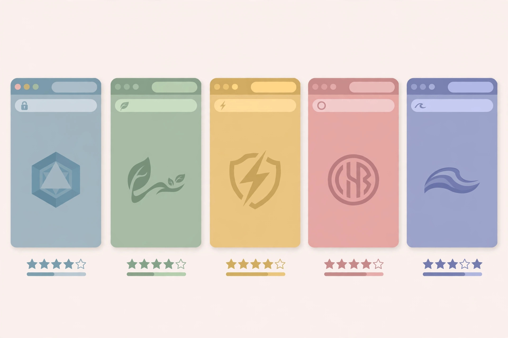

Free AI Logo Maker No Sign Up: 5 Tools Compared (2026)
Every logo maker advertises "free" in big letters — and then, right when you click Download, the "free" evaporates into a signup wall or a paywall. This is the most bait-and-switch-heavy category of AI tools we've covered: designing is almost always free, but taking the file home is where the toll booth appears. This guide compares 5 logo makers whose free tiers are documented as usable without an account, with an honest map of exactly where each one's gate sits.
A note on method before we start: this comparison is built from each tool's official pricing pages, FAQs, and documentation as of October 2026, not from a one-afternoon hands-on session that would be stale by next quarter. Logo-maker terms change often — where the official site is ambiguous, it's flagged rather than guessed. If a tool suddenly demands a login, its terms changed; the pattern below tells you where to look for the catch.
What to look for in a logo maker
Four things decide whether a "free" logo maker is actually free:
Where the download gate sits. This is the whole game. Some tools let you design, customize, and download without any account. Others let you design for free but ask for an email — or a payment — at the download step. Always read to the download button before investing twenty minutes in a design.
File format and transparency. A logo that only exports as a low-res PNG with a white background is a social-media avatar, not a logo. Transparent PNG matters for overlays and documents; vector SVG matters for print, signage, and anything that needs to scale.
Commercial rights. "Free download" and "yours to use for business" are different things. Check whether the license covers commercial use, and remember that template-based icons are shared design elements — no free tool gives you a trademark-ready, exclusive mark.
Template vs. generative. Template-based makers (pick an icon, add your name) are fast and predictable. AI-generative makers (describe your brand, get a unique design) are more original but less controllable. Neither is strictly better — they solve different problems.
1. GoodLogoAI — the genuinely free one
GoodLogoAI runs two products that are easy to confuse, so the distinction matters: the main AI logo designer is a $9.99 one-time purchase, but the separate free logo maker page is exactly what this roundup is about — and it's the real deal.
No-sign-up access: The free logo maker's FAQ states it plainly: design your logo, download the 2048 × 2048 PNG with a white or transparent background, no credit card, no hidden fees, no watermark on the download — and no registration required. That is the most complete free offer in this list.
Best for: Anyone who wants a finished, usable logo file today. The 2048px resolution is genuinely enough for websites, social profiles, email signatures, and even sharp small-format print. Commercial use is allowed.
Watch out for: Don't confuse it with the $9.99 AI designer on the same domain — that's the upsell path with vector SVG output and unlimited edits. And as with every template tool, icons are shared design elements, so run a trademark search before filing anything.
2. Playground AI — the generative pick
Playground AI's logo generator takes the AI route: type your brand name, pick from 90+ style "vibes" (modern, bold, elegant, playful…), choose a palette, and the model generates a unique design in seconds — closer to an image generator tuned for logos than a template picker.
No-sign-up access: Playground documents the tool as free with no sign-up required: 3 free logo generations, downloadable as a 1024 × 1024 PNG. Commercial use is allowed with no licensing restrictions, per their FAQ.
Best for: Projects where you want something that doesn't look like everyone else's template logo — side projects, YouTube channels, indie apps. If a generated design is close but not perfect, the "Continue Editing in Playground" option opens it in their full design editor.
Watch out for: Three generations is a tight budget — each one is unique, so choose your style and palette deliberately before clicking generate. And 1024px is fine for digital but thin for print; a generative logo is also harder to reproduce exactly if you ever need to rebuild it.

3. Network Solutions Logo Maker — the registrar's freebie
Network Solutions — the company that once ran the entire .com registry — bundles a free AI logo maker as the top of its domain-and-hosting funnel. The tool itself generates, customizes, and downloads logo ideas, with its FAQ stating no sign-up or payment is required.
No-sign-up access: "No sign-up needed" is the vendor's own claim, and their published comparison table lists free design and free download with PNG export. One caveat: at least one third-party review reports an account being needed to customize, so treat the no-signup claim as the vendor's position and verify it live — the download step is where to check.
Best for: Founders setting up a business who may also need a domain — the tool is explicitly positioned as the branding step of a business-setup funnel. The AI generates industry-tailored ideas rather than pure templates.
Watch out for: The free format is PNG; "vector files" are mentioned in marketing copy but unconfirmed in practice. And be aware of the funnel: the logo is free, but the domain and hosting it nudges you toward come with the registrar's famously aggressive renewal pricing. Take the logo; price the domain separately.
4. Hatchful by Shopify — great, with an email toll
Hatchful was Shopify's beloved free logo maker; the Hatchful name has since been retired and the tool now lives at shopify.com/tools/logo-maker. It's still free — no paid tier, no watermark — and the template flow (industry → visual style → customize) is one of the smoothest here.
No-sign-up access: Designing and previewing requires no account at all — you can reach a finished design before deciding anything. The catch is at download: the finished files are delivered as a ZIP to your email, so you'll hand over an email address (or a free Shopify account) to receive them. There's no charge, but it isn't strictly account-free end to end.
Best for: Ecommerce brands and Shopify store owners — the kit includes pre-sized social images, a favicon, and a transparent-background PNG, all genuinely useful. The "no paid tier" model also means no upsell anxiety while designing.
Watch out for: PNG only — no SVG or vector export, so it's a poor choice if you'll ever need print or large-format. Customization is also limited (fixed layouts, no free color picking), which raises the odds of a logo that looks like someone else's.
5. Logogenie — free to design, paid to download
Logogenie is included here as the honest counterexample: its design studio is genuinely free with no sign-up or card required — 3,000+ designer-made templates, granular text and layout controls, AI-assisted customization. It's one of the better editors in this space.
No-sign-up access: Designing and previewing are free without an account. But downloading the high-definition files is a one-time purchase (around €24.90 for the standard pack, with vector and exclusive-rights add-ons sold separately). There is no free download tier.
Best for: Treating it as a free design sandbox: mock up directions, test what your brand could look like, and only pay if one of the designs is worth the one-time fee. For a paid-tier logo maker, the one-time model beats a subscription.
Watch out for: The default license is non-exclusive — exclusive rights cost extra (~€120). And per third-party reviews, sign-up is required at the purchase step. Don't invest an hour perfecting a design here unless you've budgeted for the download.
The ones that didn't make the list
Two big names are worth mentioning as contrast, because their SERP presence confuses the "free" picture. Looka lets you design for free but charges for downloads (paid plans start around $20 for basic files) — a design tool, not a free logo source. Canva does offer free logo downloads, but requires an account first, which disqualifies it from a no-sign-up roundup; its free tier is solid if you're willing to register.
Side-by-side comparison
| Tool | Truly no sign-up? | Free download | Best free format |
|---|---|---|---|
| GoodLogoAI | Yes | Yes — 2048px PNG, transparent | PNG 2048 × 2048 |
| Playground AI | Yes | Yes — 3 generations, 1024px PNG | PNG 1024 × 1024 |
| Network Solutions | Claimed (verify) | Yes — PNG (per vendor) | PNG |
| Hatchful / Shopify | Design yes, download needs email | Yes — ZIP via email | PNG + social kit |
| Logogenie | Design yes | No — one-time purchase | Preview only |
"Truly no sign-up" means the full flow from design to downloaded file is documented as account-free. Anything gated at download is flagged in the row.
Which one should you actually use?
You want a finished logo file right now: GoodLogoAI's free logo maker. No account, no watermark, transparent 2048px PNG, commercial use allowed — it's the only tool here with zero gates of any kind.
You want something original, not templated: Playground AI. Three free generations won't give you many retries, so pick your style carefully — and if you outgrow templates entirely, our tested AI image generator roundup covers account-free tools for generating fully custom brand marks from text prompts.
You're launching a store on Shopify: Hatchful (now Shopify Logo Maker). The email-for-download trade is worth it for the pre-sized social kit and favicon alone.
Your logo needs a transparent background for documents or overlays: GoodLogoAI exports transparent PNG directly. If you ever end up with a logo on a white background that needs cutting out, our free background remover roundup covers account-free tools that handle exactly that job.
You'll need print or large-format one day: None of the free options here give you a reliable free vector file — that's the industry's paywall line. Either budget for a paid tier (Logogenie's one-time pack includes vector) or plan to have a designer redraw the winning concept.
FAQ
Can I trademark a logo made with a free AI logo maker?
Probably not directly. Template-based tools reuse shared icons and layouts, so your mark may not be distinctive enough — and non-exclusive licenses (like Logogenie's default) explicitly don't give you sole ownership. Generative tools are murkier. Treat a free logo as a brand placeholder; if the business takes off, commission an original mark and file properly.
Why do so many "free" logo makers charge at download?
Because the design step is the marketing and the download is the product. The industry-standard funnel is: free design → emotional investment → paywall at download. That's exactly why this roundup maps the download gate for each tool — it's the only part of the funnel that matters.
Is PNG enough, or do I need SVG?
For websites, social media, email signatures, and pitch decks, a high-res transparent PNG (like GoodLogoAI's 2048px) is plenty. You need SVG (vector) when the logo must scale without pixelation: print, packaging, signage, merchandise. If print is on your roadmap, pick a tool with vector export or budget for a redraw.
Do AI-generated logos risk looking like someone else's?
With template-based makers, yes — that's the documented downside of shared icon libraries. Generative tools like Playground AI reduce (but don't eliminate) the risk. Either way, a quick image search of your finished logo is cheap insurance before you print it on anything.
What if I need more than a logo — a full brand kit?
Hatchful's free ZIP includes social sizes and a favicon, which covers the basics. For anything beyond that (business cards, letterheads, brand guidelines), you're looking at paid tiers or a designer. Start with the free logo, validate the business, then invest in branding with revenue.